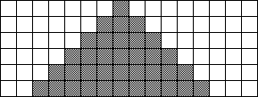

| 19. Applying the CA rule to the first few generations, we see the every cell alive in some generation remains alive in the next generation, and that two more live cells are added with each generation. | ||||||||||||||||
|  | ||||||||||||||||
| To find the pattern of the number of live cells, we tabulate the first few generations | ||||||||||||||||
| ||||||||||||||||
| So we see the number of live cells in generation n is 2n - 1. Then the number of live cells in generation 100 is 200 - 1 = 199. |
Return to Homework 9 Practice.